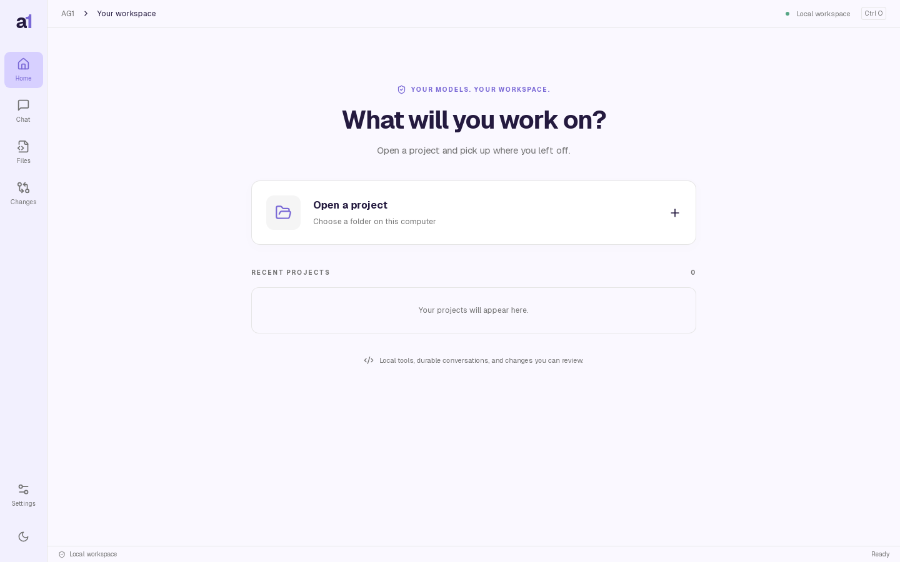
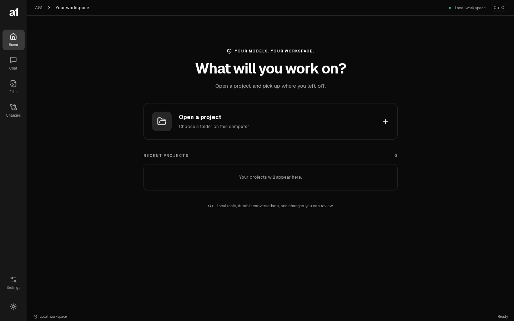
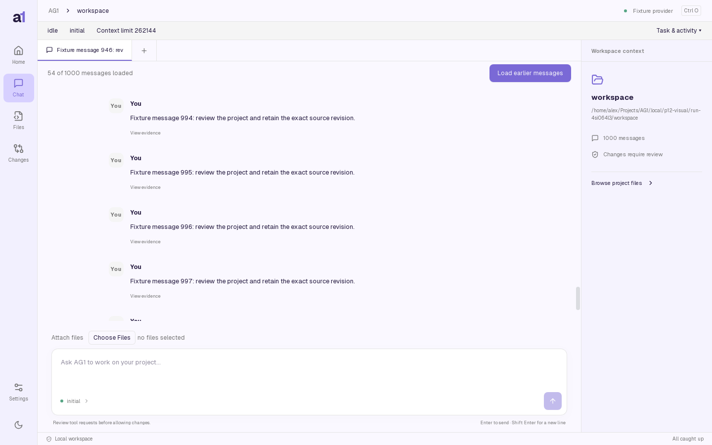
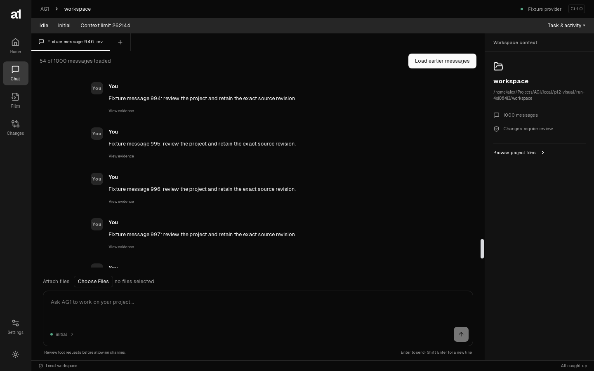
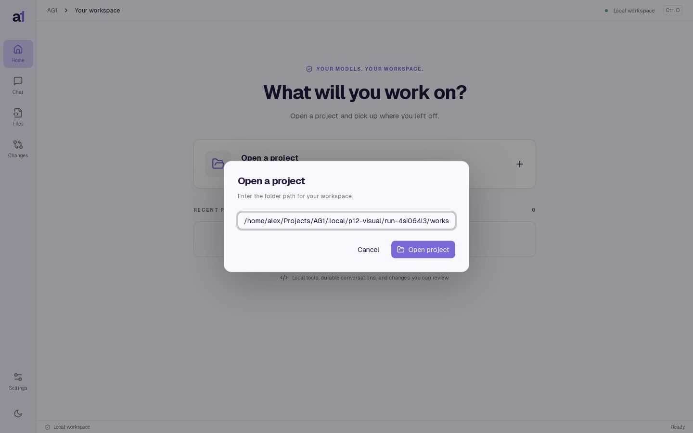
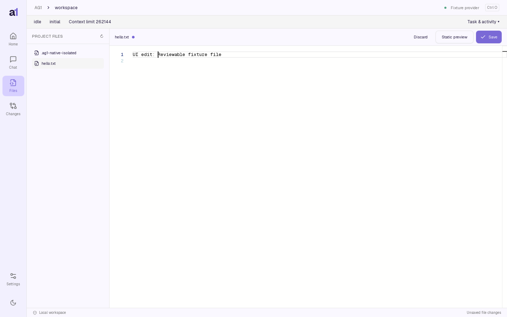

Same packaged Geist fonts and local light/dark themes. P12 adds native status and typed messages. Fixture content differs; this is a layout review, not pixel identity or a live-model benchmark.










